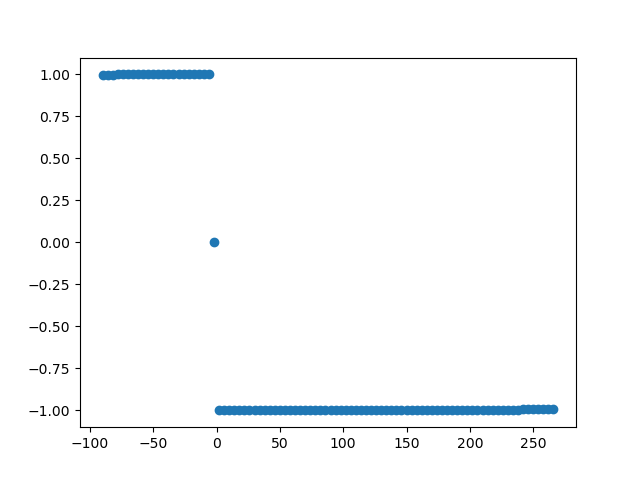

Directional absolute coherence#
This function may be called for data in the time domain, the frequency domain, or (if correctly aligned) in the complex coherency domain.
Note
Use the following function for time domain data.
- sfc.td.run_dac(data_1, data_2, fmin, fmax, fs, nperseg, nfft, return_signed_conn=True, minimal_angle_thresh=10, volume_conductance_ratio=0.3)#
Calculates the directional absolute coherence between two signals. Assumes data_1 and data_2 to be from time domain.
As the coherence is similar to the Fouier Transform of the Pearson correlation coefficient, the magnitude informs of the strength of the correlation and whereas the sign of the imaginary part informs on the direction.
Important design decision: - In case data_2 happens before data_1, the sign of the psi (used to gain directional information) is defined to be positive. - In case data_1 happens before data_2, the sign of the psi (used to gain directional information) is defined to be negative.
The sign of the imaginary part of the coherence is a sine with a frequency of f = 1 in [-180°, 180°]. Naturally, there are two roots of this sine, one at 0° and another at -180°/180°. Around these root phase shifts, the calculated sign is proportionally more sensetive to noise in the signal. Therefore, in case of phase shifts from [-thresh°, +thresh°] the amplitude is corrected to 0. Furthermore, any same_frequency_coupling with a phase shift of ~0° is (mostly) indistingusihable from volume conduction effects.
- Parameters:
data_1 – First dataset from time domain; vector of samples.
data_2 – Second dataset from time domain; vector of samples.
fmin – Minimum frequency of the frequency range on which coherency gets evaluated.
fmax – Maximum frequency of the frequency range on which coherency gets evaluated.
fs – Sampling frequency.
nperseg – Size of individual segments in fft.
nfft – fft window size.
return_signed_conn – Flag whether the absolute coherence should be multiplied with [-1, 1] for directional information.
minimal_angle_thresh – The minimal angle (phase shift) to evaluate in this analysis. Any angle smaller than the angle defined by minimal_angle_thresh is considered volume conduction and therefore replace with np.nan.
volume_conductance_ratio – Defines the ratio of below threshold connectivity values to identify volume conductance.
- Returns:
(bins, conn) - Frequency bins and corresponding same_frequency_coupling values.
Note
Use the following function for frequency domain data.
- sfc.fd.run_dac(data_1, data_2, bins, fmin, fmax, return_signed_conn=True, minimal_angle_thresh=10, volume_conductance_ratio=0.3)#
Calculates the directional absolute coherence between two signals. Assumes data_1 and data_2 to be from the complex frequency domain.
As the coherence is similar to the Fouier Transform of the Pearson correlation coefficient, the magnitude informs of the strength of the correlation and whereas the sign of the imaginary part informs on the direction.
Important design decision: - In case data_2 happens before data_1, the sign of the psi (used to gain directional information) is defined to be positive. - In case data_1 happens before data_2, the sign of the psi (used to gain directional information) is defined to be negative.
The sign of the imaginary part of the coherence is a sine with a frequency of f = 1 in [-180°, 180°]. Naturally, there are two roots of this sine, one at 0° and another at -180°/180°. Around these root phase shifts, the calculated sign is proportionally more sensetive to noise in the signal. Therefore, in case of phase shifts from [-thresh°, +thresh°] the amplitude is corrected to 0. Furthermore, any same_frequency_coupling with a phase shift of ~0° is (mostly) indistingusihable from volume conduction effects.
- Parameters:
data_1 – First dataset from the complex frequency domain; vector of samples.
data_2 – Second dataset from the complex frequency domain; vector of samples.
fmin – Minimum frequency of the frequency range on which coherency gets evaluated.
fmax – Maximum frequency of the frequency range on which coherency gets evaluated.
return_signed_conn – Flag whether the absolute coherence should be multiplied with [-1, 1] for directional information
minimal_angle_thresh – The minimal angle (phase shift) to evaluate in this analysis. Any angle smaller than the angle defined by minimal_angle_thresh is considered volume conduction and therefore replace with np.nan.
volume_conductance_ratio – Defines the ratio of below threshold connectivity values to identify volume conductance.
- Returns:
Connectivity between data_1 and data_2 measured using the directionalized absolute coherence.
Note
Use the following function for complex coherency domain data.
- sfc.cd.run_dac(data, bins, fmin, fmax, return_signed_conn=True, minimal_angle_thresh=10, volume_conductance_ratio=0.4)#
Calculates the directional absolute coherence from complex coherency.
As the coherence is similar to the Fouier Transform of the Pearson correlation coefficient, the magnitude informs of the strength of the correlation and whereas the sign of the imaginary part informs on the direction.
Important design decision: - In case data_2 happens before data_1, the sign of the psi (used to gain directional information) is defined to be positive. - In case data_1 happens before data_2, the sign of the psi (used to gain directional information) is defined to be negative.
The sign of the imaginary part of the coherence is a sine with a frequency of f = 1 in [-180°, 180°]. Naturally, there are two roots of this sine, one at 0° and another at -180°/180°. Around these root phase shifts, the calculated sign is proportionally more sensetive to noise in the signal. Therefore, in case of phase shifts from [-thresh°, +thresh°] the amplitude is corrected to 0. Furthermore, any same_frequency_coupling with a phase shift of ~0° is (mostly) indistingusihable from volume conduction effects.
- Parameters:
data – List of outer window complex coherency estimates calculated from two signals.
bins – Frequency bins of the complex coherency data.
fmin – Minimum frequency of the frequency range on which coherency gets evaluated.
fmax – Maximum frequency of the frequency range on which coherency gets evaluated.
return_signed_conn – Flag whether the absolute coherence should be multiplied with [-1, 1] for directional information
minimal_angle_thresh – The minimal angle (phase shift) to evaluate in this analysis. Any angle smaller than the angle defined by minimal_angle_thresh is considered volume conduction and therefore replace with np.nan.
volume_conductance_ratio – Defines the ratio of below threshold connectivity values to identify volume conductance.
- Returns:
Connectivity between data_1 and data_2 measured using the directionalized absolute coherence.
The following code example shows how to apply directional absolute coherence to measure sfc.
import numpy as np
import matplotlib
matplotlib.use("Qt5agg")
import matplotlib.pyplot as plt
import finn.sfc.td as td
import finn.sfc.fd as fd
import finn.sfc.cd as cohd
import finn.sfc._misc as misc
import demo_data.demo_data_paths as paths
def main():
data = np.load(paths.fct_sfc_data)
frequency_sampling = 5500
frequency_peak = 30
noise_weight = 0.2
phase_min = -90
phase_max = 270
phase_step = 4
fmin = 28
fmax = 33
nperseg = frequency_sampling
nfft = frequency_sampling
return_signed_conn = True
minimal_angle_thresh = 4
#Generate data
offset = int(np.ceil(frequency_sampling/frequency_peak))
loc_data = data[offset:]
signal_1 = np.zeros((loc_data).shape)
signal_1 += loc_data
signal_1 += np.random.random(len(loc_data)) * noise_weight
conn_vals = list()
fig = plt.figure()
for phase_shift in np.arange(phase_min, phase_max, phase_step):
loc_offset = offset - int(np.ceil(frequency_sampling/frequency_peak * phase_shift/360))
loc_data = data[(loc_offset):]
signal_2 = np.zeros(loc_data.shape)
signal_2 += loc_data
signal_2 += np.random.random(len(loc_data)) * noise_weight
plt.cla()
plt.plot(signal_1[:500], color = "blue")
plt.plot(signal_2[:500], color = "red")
plt.title("Signal shifted by %2.f degree around %2.2fHz" % (float(phase_shift), float(frequency_peak)))
plt.show(block = False)
plt.pause(0.001)
dac_value_td = calc_from_time_domain(signal_1, signal_2, fmin, fmax, frequency_sampling, nperseg, nfft, return_signed_conn, minimal_angle_thresh)
dac_value_fd = calc_from_time_domain(signal_1, signal_2, fmin, fmax, frequency_sampling, nperseg, nfft, return_signed_conn, minimal_angle_thresh)
dac_value_coh = calc_from_time_domain(signal_1, signal_2, fmin, fmax, frequency_sampling, nperseg, nfft, return_signed_conn, minimal_angle_thresh)
if (np.isnan(dac_value_td) == False and np.isnan(dac_value_fd) == False and np.isnan(dac_value_coh) == False):
if (dac_value_td != dac_value_fd or dac_value_td != dac_value_coh):
print("Error")
conn_vals.append(dac_value_td if (np.isnan(dac_value_td) == False) else 0)
plt.close(fig)
plt.figure()
plt.scatter(np.arange(phase_min, phase_max, phase_step), conn_vals)
plt.show(block = True)
def calc_from_time_domain(signal_1, signal_2, fmin, fmax, frequency_sampling, nperseg, nfft, return_signed_conn, minimal_angle_thresh):
return td.run_dac(signal_1, signal_2, fmin , fmax, frequency_sampling, nperseg, nfft, return_signed_conn, minimal_angle_thresh)[1]
def calc_from_frequency_domain(signal_1, signal_2, fmin, fmax, frequency_sampling, nperseg, nfft, return_signed_conn, minimal_angle_thresh):
seg_data_X = misc._segment_data(signal_1, nperseg, pad_type = "zero")
seg_data_Y = misc._segment_data(signal_2, nperseg, pad_type = "zero")
(bins, fd_signal_1) = misc._calc_FFT(seg_data_X, frequency_sampling, nfft, window = "hanning")
(_, fd_signal_2) = misc._calc_FFT(seg_data_Y, frequency_sampling, nfft, window = "hanning")
return fd.run_dac(fd_signal_1, fd_signal_2, bins, fmin, fmax, return_signed_conn, minimal_angle_thresh)[1]
def calc_from_coherency_domain(signal_1, signal_2, fmin, fmax, frequency_sampling, nperseg, nfft, return_signed_conn, minimal_angle_thresh):
(bins, coh) = td.run_cc(signal_1, signal_2, nperseg, "zero", frequency_sampling, nfft, "hanning")
return cohd.run_dac(coh, bins, fmin, fmax, return_signed_conn, minimal_angle_thresh)[1]
main()
Shifting the reference signal from -90° to + 270° emulates connectivity in different directions and volume conductance at 0°. Ordinarily volume conduction is returned as nan, however in the scope of this example it is returned as 0.
